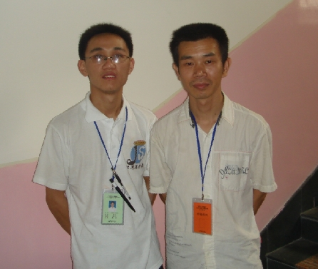

也许是动力――"永远伟大"的伟鬼
#1 也许是动力――"永远伟大"的伟鬼作者：小丸.net 发表时间：2008-6-19 21:33:41
与伟鬼的相识是在网络上，当时是因为想学棋，所以想进他的教室去看看.后来在浙江赛上见到了这个看上去有５０多岁的老师，我习惯叫他徐老师，而网上很多棋友喜欢亲昵的叫他＂鬼叔＂，俺自认为比伟鬼小不了多少，所以拒绝叫他鬼叔，要不我不是亏大了．

这是多么伟大的举措，就像他的名字＂永伟＂一样，浙江五子棋的邀请赛举办了五届，也有可能是国内唯一一家一直在做的而且是做得很好的邀请赛开办省．况且，今年浙江五子棋广纳贤才，国际连珠联盟秘书长的访华也下榻了浙江，这一切的一切，与伟鬼的努力是分不开的． 伟鬼所做的一切，是无私的，为了浙江的五子棋，伟鬼已经瘦得跟我差不多了．也许，我真该明白些什么，我真该亲昵的叫伟鬼一声――鬼叔．
另外，丸子想告诉你的是，鬼叔，以后少抽些烟行吗？
#2 Re:也许是动力――"永远伟大"的伟鬼作者：五子酷 发表时间：2008-6-20 8:28:58
伟鬼很不简单。一直坚持推广，为了五子棋发展做出了很多贡献，而且平易近人，我遇到许多问题都对我细心耐心回答（包括不是棋类的）#3 Re:也许是动力――"永远伟大"的伟鬼作者：笨蛋020 发表时间：2008-7-4 11:01:35
是啊
#4 Re:也许是动力――"永远伟大"的伟鬼作者：闫荣辉 发表时间：2008-7-4 19:54:37
 太伟大啦！感动！
太伟大啦！感动！
#5 Re:也许是动力――"永远伟大"的伟鬼作者：花月痕 发表时间：2008-7-10 16:14:06
老板，加油！#6 Re:Re:也许是动力――"永远伟大"的伟鬼作者：逆刃 发表时间：2008-7-11 12:59:05
引用：
原文由 花月痕 发表于 2008-7-10 16:14:06 :
老板，加油！

#7 Re:也许是动力――"永远伟大"的伟鬼作者：纳米 发表时间：2008-7-25 12:54:23
我心目中的偶象#8 Re:也许是动力――"永远伟大"的伟鬼作者：踵酃 发表时间：2009-5-1 9:18:29
不可能巴~~~楼主说话有点过了~~楼主看起来才不过20来岁的小伙子阿~~叫伟鬼为， 爷爷也不为过阿~~~
伟鬼大叔为了5子棋变瘦了? 会不会是抽劣烟的原因阿~~~给他买正中中华试试。
楼主也这么瘦阿? 看了照片， 还真是瘦， 多吃两口饭才行阿~~
#9 Re:也许是动力――"永远伟大"的伟鬼作者：水人 发表时间：2009-12-13 20:52:19
伟鬼很值得尊敬#10 Re:也许是动力――"永远伟大"的伟鬼作者：知易行难 发表时间：2009-12-13 21:49:57
令人敬佩的人物。五子棋界，这样的人物还是太少了。多来几个这样的组织者，五子就有希望了
#11 Re:也许是动力――"永远伟大"的伟鬼作者：星月族 发表时间：2009-12-31 17:27:09
小丸这张照片....咋说呢,"帅"就一个字
#12 Re:也许是动力――"永远伟大"的伟鬼作者：星月族 发表时间：2010-1-5 14:36:58
那威先生敬佩徐永伟的投入，打算颁给他六段证书，并想请他担任国际连珠联盟中国事务部副主席一职，然而徐永伟谢绝了，因为他想扎扎实实地从最基层做起。#13 Re:也许是动力――"永远伟大"的伟鬼作者：柔柔春风醉 发表时间：2012-2-23 15:19:05
N年前加过伟鬼，很好的一个人。愿五子棋界的朋友生活工作都如意，为五子棋做出更多成绩！#14 Re:也许是动力――"永远伟大"的伟鬼作者：五子天下 发表时间：2012-4-18 10:18:16
在浙江见过一次徐永伟，穿牛仔裤，白寸衣，去惠明路对面的少年宫教五子棋，我花15块钱买了一本花月基础